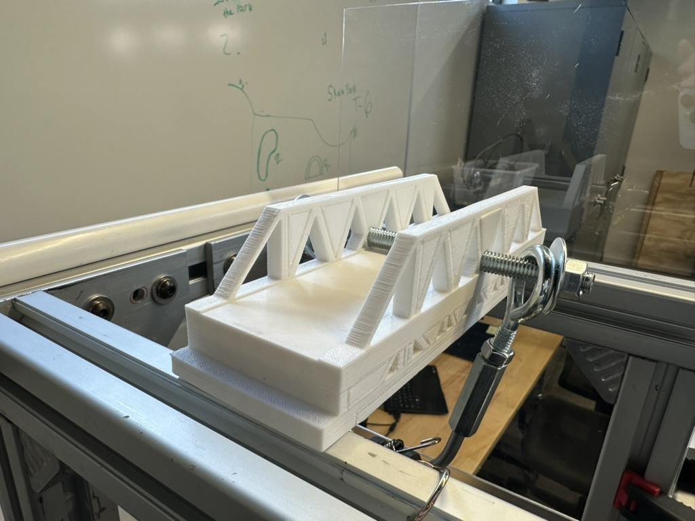
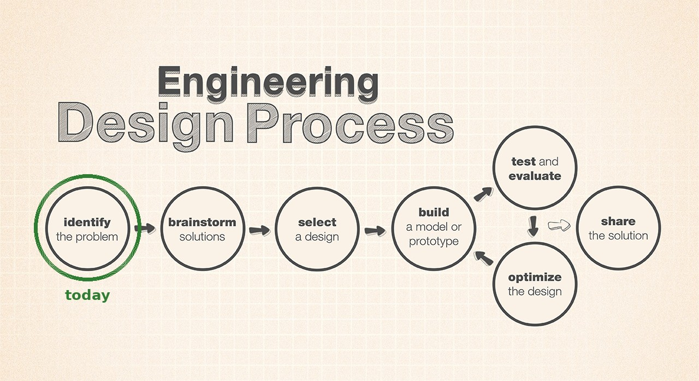
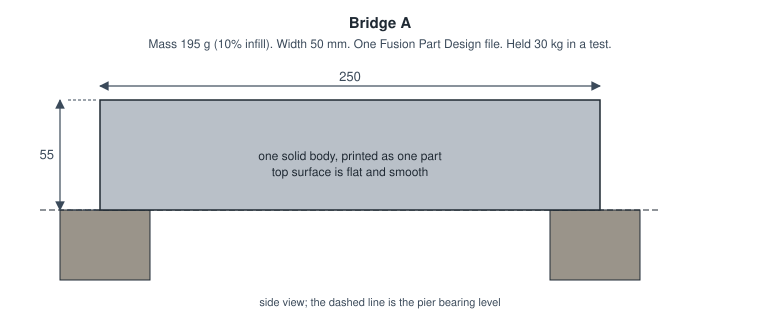
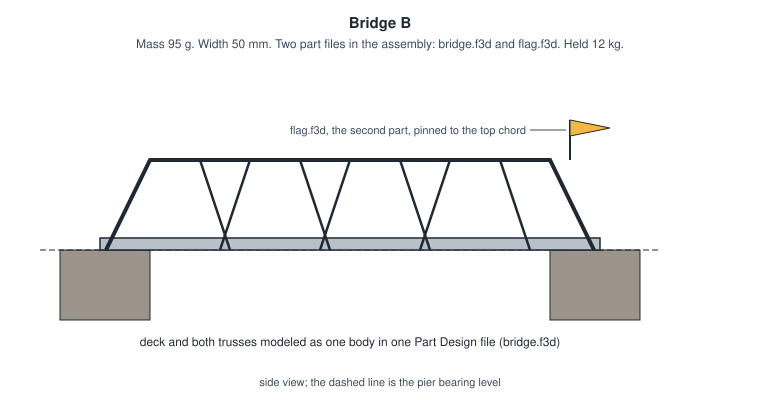
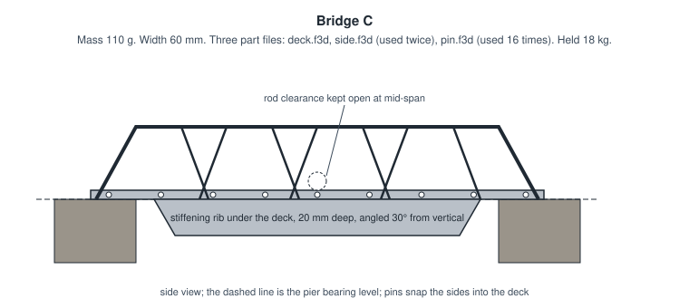

Bridge Challenge: Identify the Problem
This is a bridge. It was designed in Fusion, printed in PLA, set on two piers 200 mm apart, and pulled on until it broke. Yours is next. Before you sketch a single truss, today you're going to figure out exactly what you've been asked to build, because the surest way to lose a design challenge is to build the wrong thing very well.

Overview
The Structures unit ends with the 3D Printed Bridge Design Challenge: a bridge you design as a Fusion assembly, print, and load-test against the rest of the class. This lab is the first step of the engineering design process, identify the problem. You'll read the challenge rules the way a contractor reads a contract, restate every requirement in your own words, and prove you understood them by ruling on three sample bridges. The result is a short problem statement in your notebook that you'll design against for the rest of the unit.
Builds on: Toy Block — you'll reuse the idea of a Part Design and an Assembly Design from step 1 of that lab. No modeling today.
Before you start
Open the Bridge Design Challenge Rules in a second tab and start a new notebook entry titled Bridge Problem Statement.
You've got it when…
- Your notebook has a one-sentence problem statement that names the span, the load, and what wins.
- Every numbered rule has a row in your constraints-and-criteria table, restated in your own words and labeled as a constraint, a criterion, or a procedure.
- You've ruled on Bridges A, B, and C, and each ruling cites the rule that decides it.
- You've written at least one question you'd ask the client before designing.
Collaboration & AI
Work: On your own for the problem statement; it's your contract with the rules. Compare rulings with a neighbor once you've written yours, and argue about any you disagree on. That's the useful part.
AI — AIAS Level 2, AI Planning: You may use AI to explain a term or check whether you've missed a rule. The restatements in your table are yours, in your words; if you can't explain a row without the tool, rewrite it. What the levels mean.
Step One of Seven
Engineers don't start by building. They start by agreeing on what "done" means, because the most expensive mistake in engineering is solving the wrong problem with great precision.

Engineering Design Process flow chart, credit NASA/JPL-Caltech, with today's step circled. You'll see this chart all year. Original at JPL Education.
-
Look at the photo at the top of this page for thirty seconds. In your notebook, under the heading First guess, write one sentence: what do you think this bridge is being asked to do?
Why guess first
You'll come back to this sentence at the end of the lab and see how much of the real problem you could see from a photo. Usually the answer is "less than I thought," and that gap is the reason step one exists.
-
Read the whole rules page once, top to bottom, without taking notes. Look at every figure. You're getting the shape of the problem, not the details yet.
Constraints and Criteria
Every rule on that page is one of two things, and telling them apart is most of today's work.
A constraint is a limit you must obey. It's pass or fail: the bridge is 250 mm or shorter, or it isn't. A criterion is a quality you're judged on, where more (or less) is better: lighter, stronger, stiffer. Constraints draw the box. Criteria decide who wins inside the box.
-
Copy the starter table below into your notebook entry. Click in the first cell, drag to the last, copy, and paste; Google Docs keeps it as a table. Two rows are filled in as examples. Keep them; they count.
Rule Type In my own words Why it exists (if you can tell) 1 2 3 4 5 6 7 8 9 Constraint It has to reach across a 200 mm gap. The gap won't change. That's how far apart the piers are. 10 11 12 13 14 15 16 17 18 19 20 21 22 23 Criterion Strength per gram, not strength. A light bridge that holds a lot beats a heavy one that holds more. Rewards using less plastic well. 24 25 26 If the paste comes in as plain text
Paste it anyway, select the pasted lines, and use Format ▸ Table ▸ Convert text to table in Docs. Or ask; it takes ten seconds to show.
-
Go back to the top of the rules and work through every numbered rule, one row each. Restate each in your own words, as if you were explaining it to a teammate who hasn't read the page. Label it Constraint or Criterion.
Own words means own words
"Bridge is no more than 250 mm" is a copy. "It can hang over each pier by 25 mm at most, so 250 total" is a restatement, because it shows you know where the number comes from. If your row could have been produced by a photocopier, rewrite it.
-
A few rules are neither a limit nor a score; they describe a procedure, like the road test or how failure is defined. Label those Procedure and restate them anyway. You'll need them when you get to the rulings.
-
Fill in the last column wherever you can. Some rules explain themselves on the page. For the rest, make your best guess about what problem the rule prevents. There is no wrong answer here, only a blank one.
Checkpoint
Your table should have one row per rule, 26 in all, and every row should say Constraint, Criterion, or Procedure. If you have fewer rows than rules, you skipped one; the one-card summary at the bottom of the rules page is a quick way to find it.
The Problem Statement
A problem statement is the whole challenge in one sentence: what has to be built, what it has to do, and how success is measured. Engineers write it down so that everyone on the project is solving the same problem, and so that a month from now, when a clever idea comes along, they can check whether it's actually the assignment.
-
Under the heading Problem statement, write one sentence that names the span, the load the bridge must survive, and what makes one bridge beat another. It should be a sentence you'd be comfortable reading aloud to the client.
Stuck? Open for the shape of it.
"Design a ___ that spans , carries , and , scored on ." Fill the blanks from your table, then rewrite it so it doesn't sound like a form.
-
Under the heading Questions for the client, write at least one question the rules don't answer that you'd want answered before designing. The rules page was written by a person, and people leave things out.
Stuck? Open for a nudge.
Is there a maximum width? What happens if a bridge slides off a pier before it breaks? Does support material count if you scrape it off? What counts as touching the rod? If you found one of these on your own, you're reading like an engineer.
Rule on Three Bridges
Reading the rules is one thing. Applying them is the test. Below are three bridges submitted by imaginary students. For each, decide whether it may be load tested, and cite the rule that decides it.

Bridge A. One solid block, 250 x 50 x 55 mm, printed as a single part at 10% infill. Flat top. Rests 25 mm on each pier. Mass 195 g. Held 30 kg.

Bridge B. Deck and both trusses modeled as one body in bridge.f3d; a small flag in flag.f3d pinned to the top chord makes it a two-part assembly. Deck 6 mm thick resting on the piers, trusses 45 mm tall above it, 50 mm wide, 250 mm long, opening left for the rod. Mass 95 g. Held 12 kg.

Bridge C. Three part files: deck.f3d, side.f3d used twice, and pin.f3d used sixteen times to snap the sides into the deck. Deck 5 mm thick resting on the piers, sides 35 mm tall above the deck, a stiffening rib 20 mm deep under the deck between the piers, angled 30° from vertical. 60 mm wide, 250 mm long, opening left for the rod. Mass 110 g. Held 18 kg.
-
Under the heading Rulings, copy this table into your notebook the same way. A bridge that breaks any constraint is not legal, no matter how much it held.
Bridge Legal? Rule(s) Why A B C -
For each bridge, write Yes or No, the number of the deciding rule (or rules; some bridges break more than one), and one sentence of reasoning that uses your own restatement from the table above.
-
For any bridge you ruled legal, prove it: check its numbers against every dimension rule and write "passes 9 through 13" or whichever rules you checked. A ruling of Yes with no evidence is a guess.
Held 30 kg is not an argument
Failure load doesn't appear in any constraint. If you find yourself wanting to rule a bridge legal because it was strong, go back to your table and find the row that says what strength is actually worth.
-
Compare your rulings with a neighbor. Where you disagree, find the rule and read it out loud together. Change your answer if the rule says so, and note in the margin that you did; changing your mind because of evidence is what the notebook is for.
-
Last, go back to your First guess sentence from step 1 and, under it, write one line about what the photo didn't tell you.
Checkpoint
Three rulings, each with a rule number, and at least one No. If all three came back Yes, one of your rows is being too generous.
Challenges
Try these on your own once your rulings are done.
- Weigh the brick. PLA is about 1.24 g/cm³. Work out what a solid 250 x 50 x 55 mm block would weigh if it were printed 100% solid, and compare it to rule 6. Then explain why the imaginary student printed it at 10% infill.
- Use the basement. If a bridge uses the full 25 mm below the piers, how tall can its trusses be above the deck? Sketch the tallest legal cross-section.
- Ask a better question. Write a second client question, and this time propose the answer you'd give if you were the client. That's the job you'll have when you write rules for someone else.
Turn It In
- Your Bridge Problem Statement notebook entry: the one-sentence problem statement, the constraints-and-criteria table with a row for every numbered rule, and at least one question for the client.
- Your Rulings table for Bridges A, B, and C, each with the rule number that decides it and one sentence of reasoning.
Both live in your notebook. Nothing is uploaded; I'll review the entry with you at your next notebook check.
How It's Graded
This lab is worth up to 4 points. One score covers everything you turn in.
| Score | What it looks like |
|---|---|
| 4 — Excellent | Every rule has a row, restated rather than copied and labeled correctly as a constraint, criterion, or procedure; the problem statement names the span, the proof load, and the strength-to-weight scoring; all three rulings are correct and cite the deciding rule, and the legal bridge is shown to pass each dimension rule rather than assumed to. |
| 3 — Above Average | The table is complete and the rulings are right, with a slip or two — a rule labeled as a criterion when it's a constraint, a row that's closer to a copy than a restatement, or a legal ruling with the evidence left out. |
| 2 — Average | About half the rules have rows, or the rows are mostly copied, or one ruling is wrong or cites no rule. The problem statement is present but leaves out the load or the scoring. |
| 1 — Below Average | A handful of rows, no problem statement, or rulings with no reasoning. |
| 0 — Failing | Nothing in the notebook, or an entry that shows the rules were never read. |